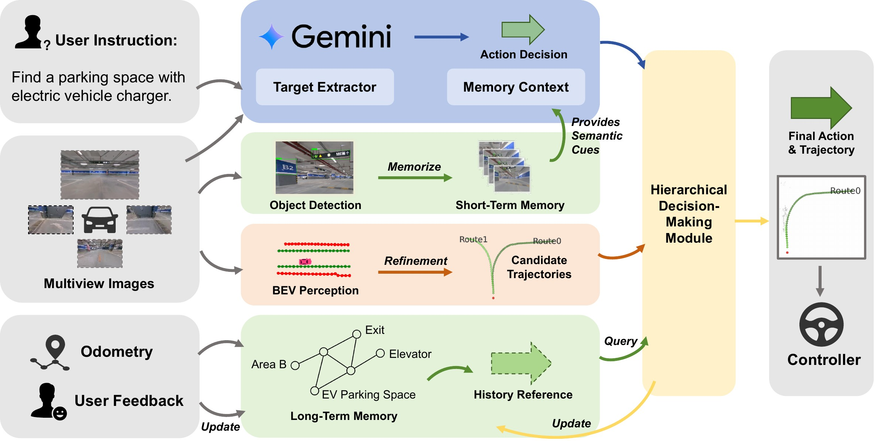
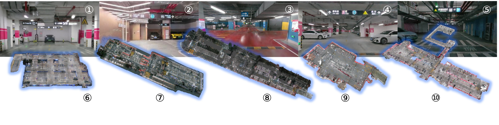
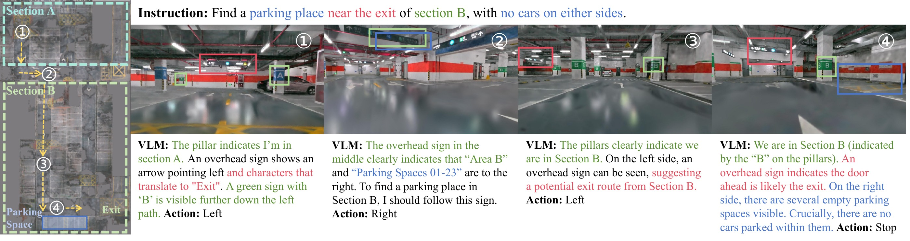
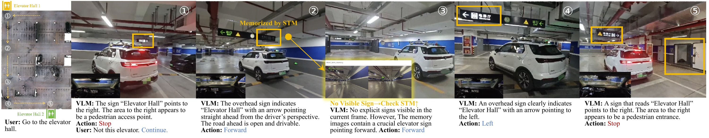

Video
Abstract
Existing methods in Autonomous Valet Parking (AVP) typically rely on pre-built maps, which severely restricts their scalability to unseen environments and open-vocabulary targets. Inspired by the application of Vision-Language Models (VLMs) in Vision-Language Navigation (VLN) tasks, we propose VLN-AVP, a zero-shot navigation framework for AVP tasks. By combining the precise spatial perception of a Bird's-Eye-View (BEV) model with the general intelligence of VLMs, our framework 1) eliminates the dependency on pre-built maps, 2) interprets semantic environmental contexts in parking scenarios, and 3) enables intuitive navigation following natural language instructions. Specifically, we introduce a hybrid memory system: a short-term perception memory tracks semantic visual cues to address the limitations of VLM's single-frame reasoning in existing methods, while a long-term topological memory facilitates stable policy learning from past experiences. To bridge the gap in existing benchmarks, we also present the VLN-AVP dataset and benchmark. Featuring 10 high-fidelity parking scenes and over 1,000 navigation episodes, it has the largest number of garage scenes to date and is the first VLN benchmark for underground parking. Extensive experiments demonstrate that in simulation, our method achieves an over 25% improvement in success rate compared to VLN methods and an over 15% improvement compared to other autonomous driving methods. Furthermore, it attains a leading success rate in real-world vehicle experiments, proving its practical feasibility.

VLN-AVP combines BEV perception, VLM reasoning, short-term perception memory, and long-term topological memory in a hierarchical decision-making framework.

The VLN-AVP dataset contains 10 high-fidelity underground garage scenes reconstructed with 3D Gaussian Splatting.

A simulation case study shows the system following a complex, multi-stage parking instruction.

In a real-world test, the vehicle uses short-term memory and user feedback to reach the intended elevator hall.
BibTeX
@inproceedings{li2026vlnavp,
title={VLN-AVP: Zero-Shot Vision-Language Navigation with Hybrid Long-Short-Term Memory for Autonomous Valet Parking},
author={Li, Yijian and Mu, Xiangru and Li, Changze and Shi, Hantian and Cai, Jiyuan and Cai, Jia and Liu, Xiaoxue and Sun, Yajing and Yang, Ming and Qin, Tong},
booktitle={2026 IEEE/RSJ International Conference on Intelligent Robots and Systems (IROS)},
year={2026},
url={https://arxiv.org/abs/2607.17767}
}